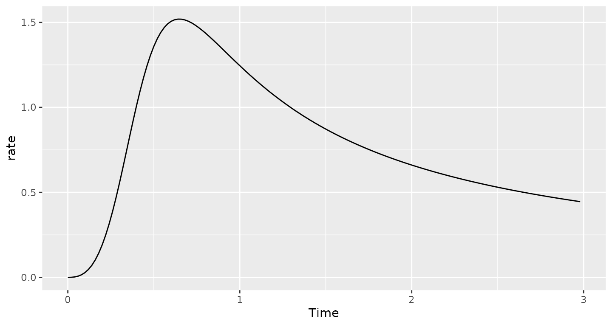

Approximating an arbitrary hazard function
arbitraryhazard.Rmd
library(simtrial)
library(bshazard)
#> Loading required package: splines
#> Loading required package: survival
#> Loading required package: Epi
library(ggplot2)
library(dplyr)
#>
#> Attaching package: 'dplyr'
#> The following objects are masked from 'package:stats':
#>
#> filter, lag
#> The following objects are masked from 'package:base':
#>
#> intersect, setdiff, setequal, union
library(survival)We simulate a log-logistic distribution as an example of how to simulate a trial with an arbitrary distribution. We begin by showing hazard rates that can be used to approximate this distribution.
dloglogis <- function(x, alpha = 1, beta = 4){
1 / (1 + (x/alpha)^beta)
}
times <- (1:150) / 50
xx <- tibble(Times=times,Survival=dloglogis(times,alpha=.5,beta=4)) %>%
mutate(duration = Times-lag(Times,default=0),
H = -log(Survival),
rate = (H-lag(H,default=0)) / duration / 3
) %>%
select(duration,rate)
ggplot(data = xx %>% mutate(Time=lag(cumsum(duration),default=0)), aes(x=Time,y=rate))+geom_line()
We assume the time scale above is in years and that enrollment occurs over the first half year at an even rate of 500 per year. We assume that observations are censored at an exponential rate of about 5% per year.
tx <- "Log-logistic"
enrollRates <- tibble(duration = .5, rate = 500)
dropoutRates <- tibble(Treatment = tx, duration = 3, rate = .05, period = 1, Stratum = "All")
block <- rep(tx,2)
x <- simPWSurv(n=250, # sample size
block = block,
enrollRates = enrollRates,
failRates = xx %>% mutate(Stratum="All", Treatment=tx, period=1:n(), Stratum = "All"),
dropoutRates = dropoutRates)We assume the entire study lasts 3 years
y <- x %>% cutData(3)
head(y)
#> # A tibble: 6 x 4
#> # Groups: Stratum, Treatment [1]
#> tte event Stratum Treatment
#> <dbl> <dbl> <chr> <chr>
#> 1 0.945 1 All Log-logistic
#> 2 2.11 1 All Log-logistic
#> 3 0.638 1 All Log-logistic
#> 4 1.11 1 All Log-logistic
#> 5 0.526 1 All Log-logistic
#> 6 1.21 1 All Log-logisticNow we estimate a Kaplan-Meier curve.

Finally, we plot the estimated hazard rate and its confidence interval as a function of time. We overlay the actual rates in red.
fit <- bshazard(Surv(tte, event) ~ 1, data = y, nk = 120)
#> Iterations: relative error in phi-hat = 1e-04
#> phi= 3.391453 sv2= 0.02045635 df= 24.0269 lambda= 165.7897
#> phi= 3.493287 sv2= 0.001838371 df= 12.73565 lambda= 1900.207
#> phi= 3.683712 sv2= 0.0006576977 df= 7.403917 lambda= 5600.919
#> phi= 3.894609 sv2= 0.0004838596 df= 5.871162 lambda= 8049.047
#> phi= 3.980202 sv2= 0.0004235299 df= 5.446444 lambda= 9397.689
#> phi= 4.018377 sv2= 0.0003980919 df= 5.277195 lambda= 10094.09
plot(fit,conf.int=TRUE,xlab='Time',xlim=c(0,3),ylim=c(0,2.5),lwd=2)
lines(x=times,y=(xx %>% mutate(Time=lag(cumsum(duration),default=0)))$rate,col=2)